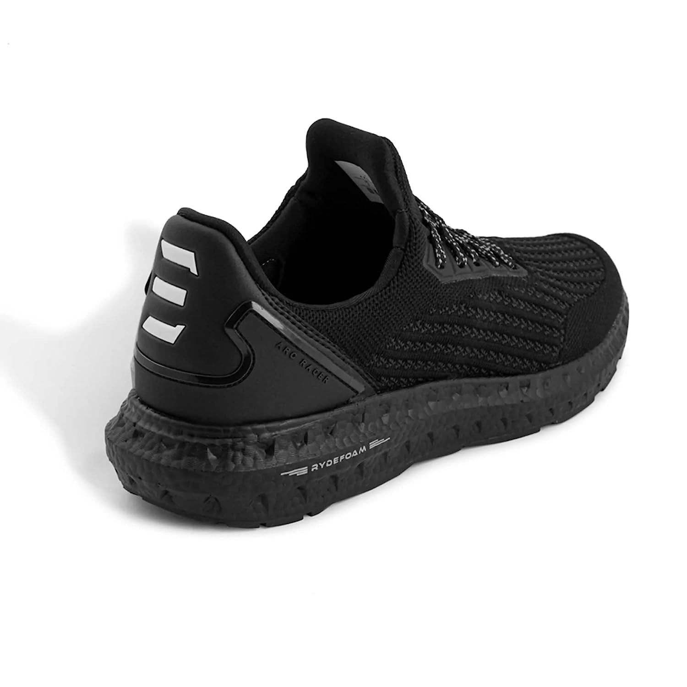
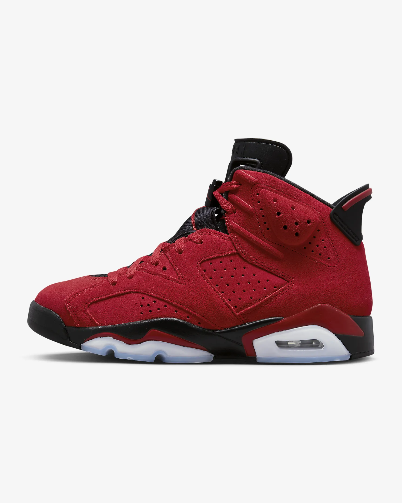

Shoes Shope
This industry are primarily engaged in the retail sale of men's & women's and children's footwear Owning and operating a shoe store may seem the ideal goal for anyone passionate about footwear. But business savvy is a must, as retail success is ultimately about the numbers--sales numbers. This means the store design, the stock and even the lighting must appeal to the target consumer. Whether you plan to cater to economy-minded families or upscale patrons focused on the height of luxury, your shoe store must meet consumer needs and expectations. Inviting Exterior First impressions are critical to any retail establishment. Exterior design, signage and logo should appeal to your target consumer. In a store that specializes in a certain type of footwear--designer, athletic or comfort/walking--exterior elements should also convey the spirit of the store's inventory, so consumers unfamiliar with the retailer get an immediate impression of what the store has to offer. Display Window Design Though the display window is viewed from the store exterior, it deserves its own section. Display designs can be used to convey store branding, highlight manufacturer/designer names or alert potential customers to special pricing or promotions. Any shoes on display should be adequately spaced and arranged in a way that complements attendant signage. The plate glass itself should be spotless. Cramped, crowded displays and dirty windows are an immediate consumer turnoff.
Men's
 

Women's

.png)
.png)